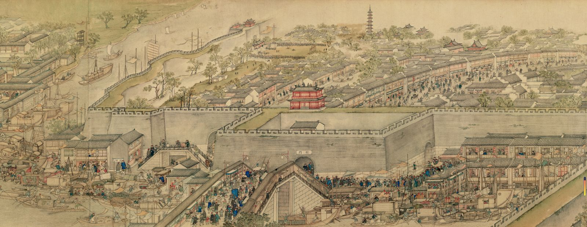

公元1759年，苏州画家徐扬花了三年时间，
画了一幅12米长卷——《姑苏繁华图》。
从灵岩山画到虎丘，把乾隆年间的苏州整座城搬上了画卷。
CLICK TO REVEAL · 点击卡片揭晓答案
山前村还在，木渎敌楼拆了；吴门桥三个桥洞只剩一个……
变了的，是沧海桑田；没变的，是你脚下这条街、这座桥、这条河。
灵岩山 → 虎丘 · 全程46个打卡点
从灵岩山找到虎丘山
木渎古镇 · 胥江运河 · 石湖风光 · 13个点位
接官码头 · 直达姑苏 · 8个点位
官署 · 街市 · 古迹 · 16个点位
阊门 → 七里山塘 → 虎丘 · 9个点位
HOVER TO SEE · 悬停查看点位名称
上完这门课，再走一遍苏州城
你以为熟悉的地方，其实藏着270年的秘密
每节课带古画局部和今天照片，边看边找
不是干巴巴听讲，是大家一起"找不同"、聊苏州
46个点位，哪些还能看到、哪些只能想象，课上全告诉你
四章节，46个打卡点，从灵岩山找到虎丘山。
带着古画和今天的照片，一起玩一场跨越270年的"找不同"。